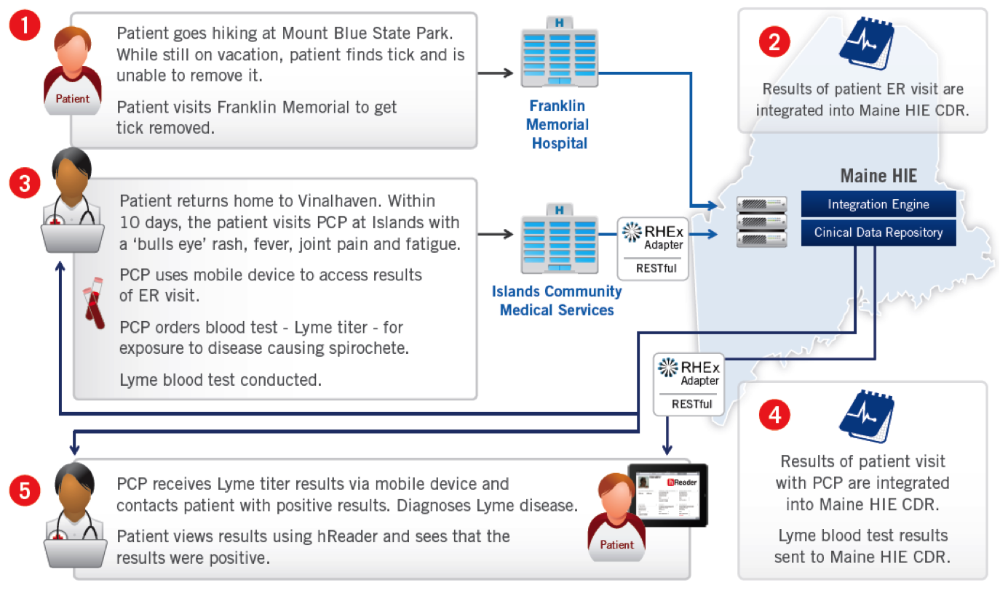

The Pull workflow in Blue Button Plus proposed by the hReader team has reached consensus in the Pull Working Group!
The hReader team has been working on the new proposal for the Pull workflow in Blue Button Plus using open standards like OAuth 2 and OpenID Connect.
We demonstrated hReader working with the Maine Health Information Exchange provider, HealthInfoNet, at HIMSS 2013 in New Orleans. Through interactions with RHEx servers at HealthInfoNet, we updated and displayed the record of a patient visiting several hospitals within Maine in real time to treat a tick bite and a follow-up Lyme Disease screening.
Several new documents have been added to the Documentation section, including the hReader Setup Guide, hReader Developer's Guide, as well as coding guidelines for the hReader project.
hReader just released a new applets: Total Cholesterol!
The hReader team presents hReader at OSEHRA Open Source EHR Summit & Workshop in Washington DC.
hReader tests favorably against DISA STIG security measures.
hReader just released two new applets: Oxygen Saturation and Respiratory Rate!
hReader is a collaborative research project from the MITRE Corporation
*All health data and information in the screen shots is synthetic.